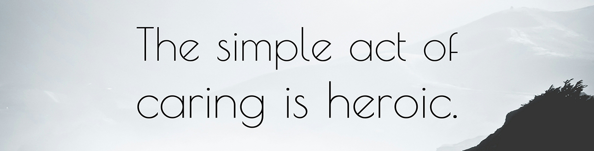
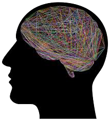

A Trauma-Informed Instructional Approach
Working with Individuals Who Are/Were Incarcerated
Individuals who have been incarcerated face significant barriers when considering reentry. What may be one of the biggest obstacles is the negative stigma associated with incarceration, regardless of the offense. That stigma follows individuals far beyond their release date. Many find it harder than their non-justice involved counterparts to find stable housing, employment opportunities, and other services. Often, individuals are reluctant to even reach out for support due to the intense social stigma around incarceration and their own lack of trust in the system.
To best support this population, we need to educate ourselves, address our own biases, break down stigma, and offer the types of support that will foster resilience.
Adverse Childhood Experiences (ACEs), Epigenetics, and Resilience
Incarceration as an adult has been shown to be linked to adverse childhood experiences early in life. It’s essential to understand the impact of ACEs and epigenetics to truly begin the hard work of breaking down stigma.
History of the study
The original ACE study was conducted from 1995-1997 with 17,000 individuals. The study was intended to investigate childhood abuse, neglect, and household challenges and the impact those experiences had on health and well-being later in life. The ACE study found a direct link between childhood trauma and social, emotional, and health related challenges in adulthood. The higher the number of ACEs, the greater the likelihood of chronic health concerns, incarceration, employment struggles, etc.
What are ACEs?
The original 10:
- Emotional Abuse
- Physical Abuse
- Sexual Abuse
- Emotional Neglect
- Physical Neglect
- Mother treated violently
- Household substance abuse
- Household mental illness
- Parental separation or divorce
- Incarcerated household member
Additional ACEs now considered:
- Bullying (by another child or adult)
- Witnessing violence outside the home
- Witnessing a brother or sister being abused
- Racism, sexism, or any other form of discrimination
- Being homeless
- Natural disaster and war
Toxic Stress
Toxic stress is stress that is prolonged, severe, or chronic. It is often brought on by the experience of an adverse childhood experience. When we are young and we experience toxic stress without the support of a caring adult, we become vulnerable to a host of problems, some of which include changes in brain architecture, difficulties with executive functioning skills, and a weakened immune system, leading to disease and chronic illness.
Epigenetics
The word epigenetics means “above” or “on top of” genetics. It refers to the study of how behaviors and our environment can actually impact the way our genes work. There was a study done where researchers paired the scent of cherry blossom with painful electric shocks. The lab rats in the study quickly learned to fear the scent of cherry blossom. Their brains responded by producing extra neurons in the scent-processing area, which went into overdrive to make them super-sensitive to smell. The surprising portion of the study was when their pups and their pups’ pups were also afraid of the scent of cherry blossom even though they were never exposed to the electric shock. This study showed that we can be affected by trauma we didn't even experience.
Epigenetic adaptation is caused in response to experience. Epigenetics offers an explanation for how the negative effects of ACEs, poverty, cultural oppression, and racism can become sustained generational struggles.
Resilience
You really can’t talk about ACEs and epigenetics without also discussing resilience. Strong, positive experiences can also be passed on through epigenetic adaptations. Healthy peer relationships, mentorship, routines and rituals, and mindfulness are a few examples of resilience factors that can help balance the scale. This is the magic of resilience.
Interested in learning more?
Brains: Journey to Resilience (8-minute video): https://www.youtube.com/watch?v=HJvDrT6N-mw. This video is a bit different, but actually explains these concepts really well!

Brain Science
Knowledge of some basic brain science can help us understand and discuss the events that may have led to a period of incarceration. It can also assist us as we find new, creative ways to support those reentering.
What is executive functioning?
Executive functioning refers to skills such organization, planning ahead, meeting goals, self-control, etc. We are not born with these skills, but we can all develop them over time. Usually, we learn these skills in our youth (between the ages of 3 and 5). However, when children experience toxic stress (prolonged, severe, or chronic stress) they are unable to develop those skills. Without strong executive functioning, adults may struggle with performing at school or work, they may have difficulties in their relationships, and they won’t always have access to the parts of their brain that help them make rational decisions.
Barking Dog vs. Wise Owl
This is an excellent visual example of how the brain reacts under stress. Dr. Daniel Siegel presenting a Hand Model of the Brain (2.5 minutes): https://www.youtube.com/watch?v=gm9CIJ74Oxw
Learning Brain vs. Survival Brain
This short video is aimed at educators. It re-frames trauma in terms of learning brain vs. survival brain (5 minutes): https://www.youtube.com/watch?v=KoqaUANGvpA
Addressing Stigma and Bias
As stated previously, one of the biggest barriers for those reentering is the stigma surrounding incarceration. Our job is to address our own internalized bias and work toward stigma reduction. An individual is much more than their mistakes.
What is implicit bias?
Implicit bias is a negative attitude that we are often not consciously aware of against a specific social group. Implicit bias is shaped by experience and learned associations. Our implicit bias can impact the way we interact with the world, especially if we are unaware we have them.
How does implicit bias show up?
- Judgments about people who are incarcerated,
- Judgements about their family members,
- Expectations we have for them,
- Assumptions about their history,
- Assumptions about their record,
- Attributions to poverty, race, or low intelligence, and
- Reluctance in talking about their incarceration.
How can you help to reduce stigma?
- Start by exploring your own bias,
- Pay attention to the language you use (see below),
- Be inclusive in your personal and professional interactions,
- Educate others – when we know better, we can do better,
- Don’t be afraid to talk about incarceration, and
- Find ways to ‘normalize’ incarceration (ex. ask about it on intake forms, discuss it as you would any other life circumstance).
Language Matters
Always use person-first language. This shows that you know someone is more than their worst mistake. A person who has spent time in prison is a son or daughter, a parent, a friend, a coworker, a movie lover or artist or athlete first. They are far more than their time in prison.
| Don’t Say | Do Say |
|---|---|
| Criminal | Person who is/was incarcerated |
| Inmate | Person who is/was in prison |
| Prisoner | |
| Incarcerated person |
Avoid using the word "choice" when referring to the circumstances that led to a period of incarceration. The word “choice” implies that at the time of the crime an individual was able to access the decision-making part of their brain, which is not necessarily always true. Instead, use the phrase, "acted in a way…" For example, "Mark acted in a way that harmed someone."
The Larger Impact of Incarceration
Incarceration does not happen in a vacuum. When someone goes to prison, there is more than likely widespread impact on family members, children, friends, the larger community, etc. It’s important to consider what this impact might be like so that you can best support the individual as they prepare to return to the community.
Keep in mind, we cannot assume that solely supporting the individual incarcerated will be enough. Wraparound support and understanding will be much more effective in a positive reentry experience for both the individual and their family and children. Although our goals are primarily in employment, we can be mindful of the larger picture.
Potential Impact
- Shifting roles and relationships - childcare, financial, emotional, or physical support may end when an individual serves time. This leaves family and friends at home to reorganize their support system. It may not look the same when an individual returns as when they left. This can be difficult to navigate for everyone involved.
- Financial well-being - families may be left struggling financially with one less paycheck to count on and they may see additional costs arise during the period of incarceration. For the individual nearing release, there may be child support payments, fines, restitution, etc. to consider.
- Custody, guardianship, and care agreements - if the individual had children in their care prior to sentencing, other arrangements will have been made during the period of incarceration. This may mean someone has lost parental rights, it may mean there is a temporary care agreement in place, and it likely means there will be both legal and social ramifications that individual must navigate upon release.
- Release and reentry - while returning home may feel like a very exciting thing, it comes with a host of complications and many things to consider. Depending on the type of release (furlough, parole, max-out, etc.) an individual may have conditions of release that they must consider when making decisions about living arrangements, job opportunities, interactions with family and friends, social engagements, etc.
Supports available:
- Circles of Support and Accountability (CoSA) is a model that focuses on the reintegration of individuals into the community after a period of incarceration. Oftentimes these circles are for high-risk individuals, although that is not always the case. Circles are often run by a member of a restorative justice agency and there are always volunteers in the circle.
- Restorative justice agencies have knowledgeable individuals, programs, and service navigation support that can be very useful.
- Coming Home, a documentary by Bess O’Brien: https://vimeo.com/268889999 (password:
cosa)
Racism and Incarceration
You cannot talk about incarceration without also talking about racism. Black people are incarcerated at a much higher rate than their white counterparts and their stays are longer. Recent data suggests Black Americans are imprisoned five times the rate of white Americans.
It might be important to note that in Vermont, where many IAA folks are from and where our organization first began, the disparity is staggering. The ratio of blacks to whites in Vermont is 11:1, one of the highest in the country.
It is impossible to envision and work toward justice reform if we aren’t also actively working toward becoming anti-racist.
For those looking to learn more, Netflix has a documentary that addresses the country’s history of racism in the prison system. Here is a link to where you can watch on YouTube: https://www.youtube.com/watch?v=krfcq5pF8u8